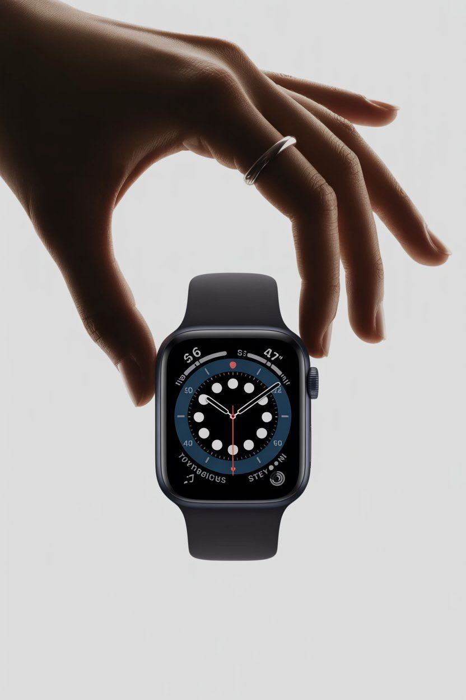
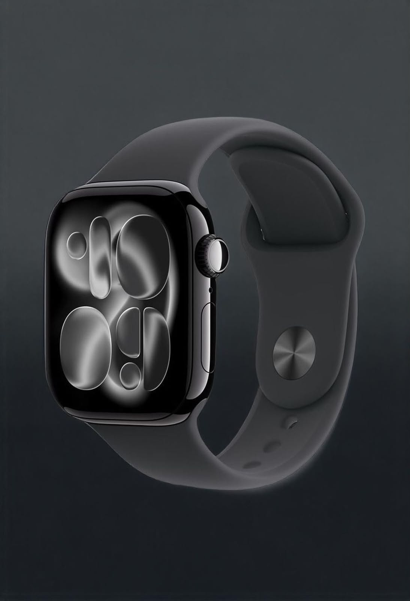
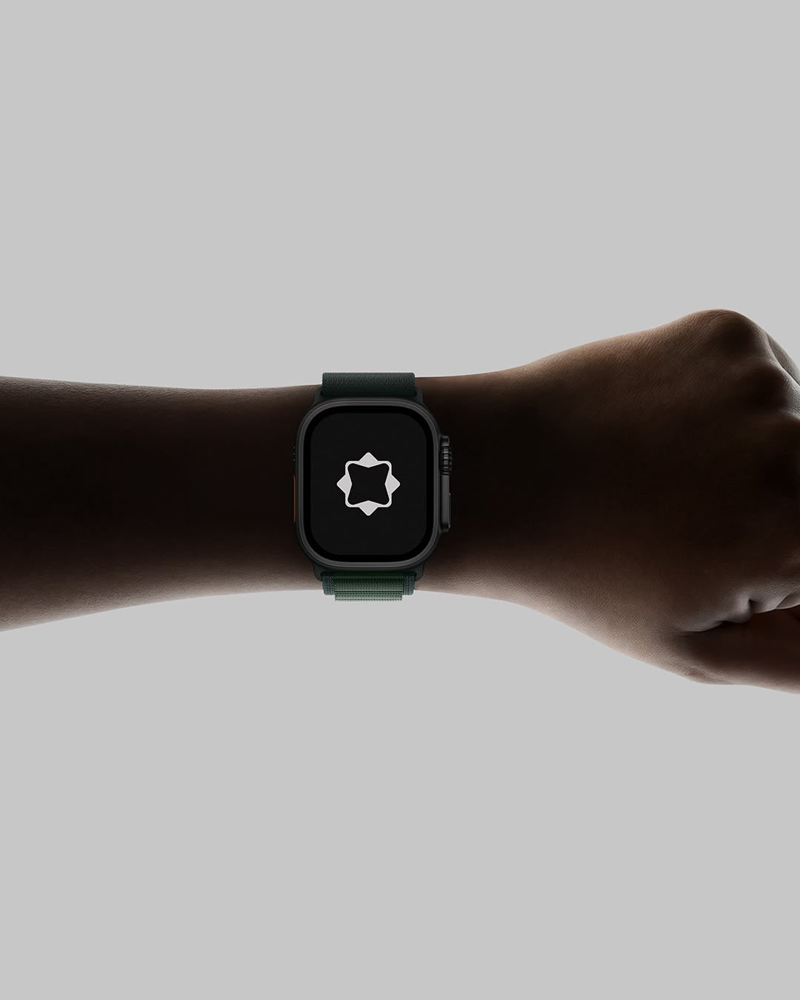
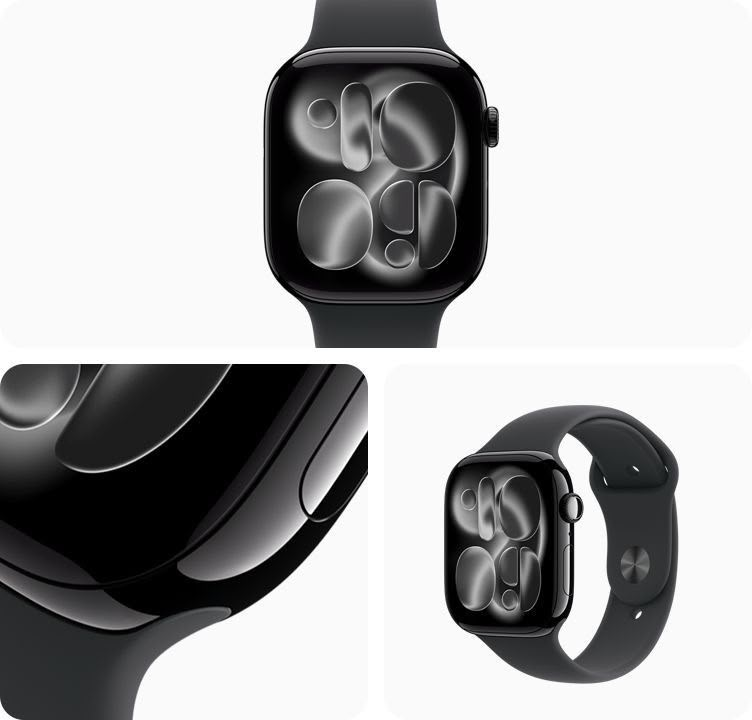
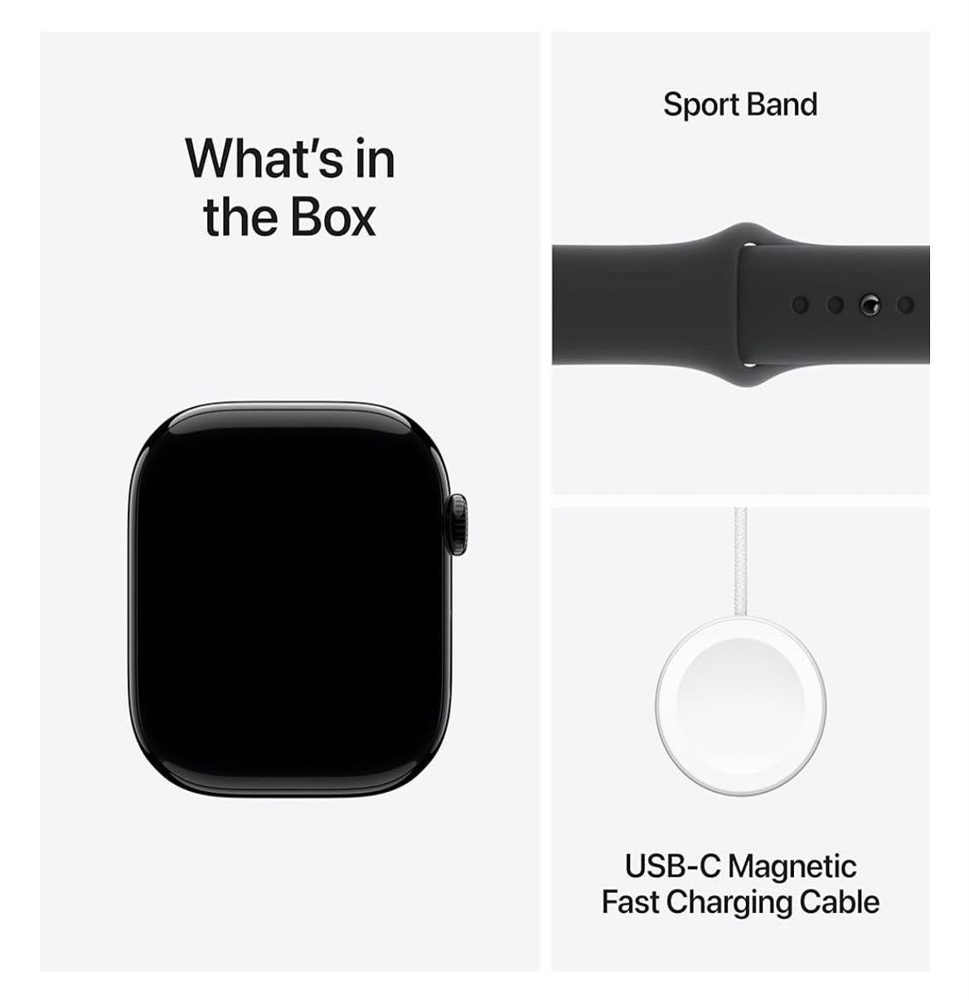
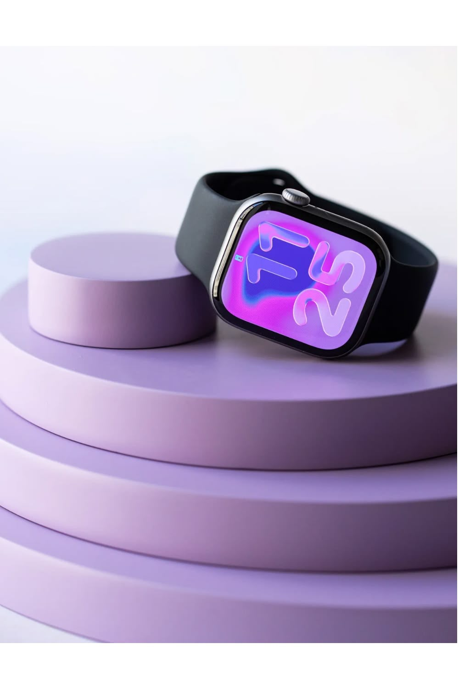
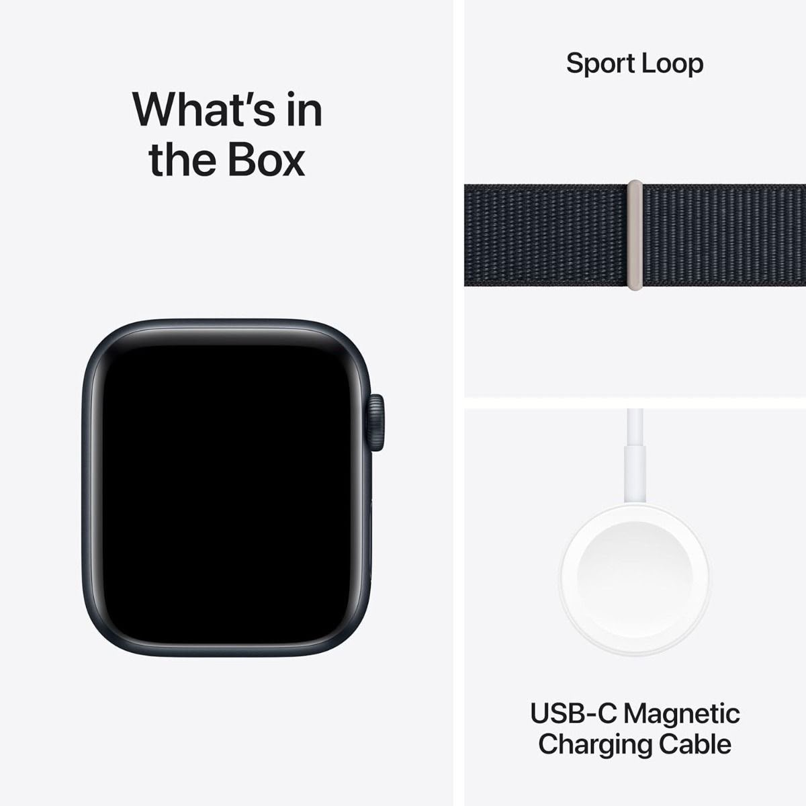

Presentamos
Una esfera líquida que respira con cada segundo. La misma precisión de siempre, con una cara completamente nueva.
No rediseñamos el reloj.
Rediseñamos lo que se siente al mirarlo.

La nueva esfera dinámica distorsiona la luz como si fuera líquido real. Cada burbuja marca una hora, cada reflejo cambia contigo al girar la muñeca. Se ve distinto en cada movimiento, y aun así siempre sabes qué hora es.

Fotografiado en pleno giro. Así se comporta en la vida real, no solo en reposo.

Aluminio de grado aeroespacial en el cuerpo, correa deportiva de silicón suave al tacto. Lo suficientemente discreto para olvidar que lo traes puesto, hasta que revisa tu pulso a media carrera.

Correa trail verde. Caja de titanio. Encendido y listo, sin importar el terreno.

Las esferas cambian de tono con la luz del día. Frío en la mañana, cálido al atardecer.


Desde $8,999 MXN o en 12 meses sin intereses.
Comprar ahoraEl envío y la caja pueden variar según el modelo elegido.